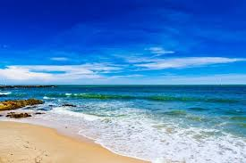
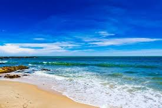

Đây là những hình ảnh được chụp tại những bãi biển được xem là đẹp nhất VN
3 hình ảnh trên được chụp tại 3 địa điểm khác nhau: Nha Trang, Đà Nẵng và Phú Quốc
Những địa điểm trên được xem là mũi nhọn của du lịch Vn khi hàng năm tiếp đón hàng triệu lượt khách quốc tế
Tôi sẽ mô tả chi tiết để các bạn cảm nhận được vẻ đẹp của chúng:
Nha Trang
–Với đường bờ biển uốn cong hình cánh cung ôm trọn một vùng vịnh sóng sánh trong xanh. Xa xa những dãy núi cao sừng sững giữa trời mây, biển Nha Trang sở hữu vẻ đẹp cuốn hút khiến lòng người đắm say.
–Mặt nước phẳng lặng cùng những đợt sóng hiền hòa. Bãi cát trắng lấp lánh dưới nắng vàng cùng những hàng dừa, phi lao xanh ngát. Không gì thích thú hơn khi được đến đây hòa mình vào làn nước mát hay ngả người thật thoải mái trên chiếc ghế bố êm.
Đà Nẵng
–Bãi biển Đà Nẵng có độ sóng nhỏ, nước êm, nước trong xanh bốn mùa, không bị ô nhiễm, độ mặn vào khoảng 60%, độ an toàn cao, các bãi tắm ở bán đảo Sơn Trà còn có nhiều san hô, nguồn động thực vật ven bờ và dưới biển phong phú. Các bãi tắm có độ dốc lớn, nước trong xanh thích hợp cho những du khách muốn thưởng thức các loại hình dịch vụ giải trí nghỉ dưỡng, câu cá, lướt ván, lặn ngắm san hô, du thuyền,…
Phú Quốc
–Biển Phú Quốc đẹp thuần khiết với khung cảnh thiên nhiên miền nhiệt đới hoang sơ, trù phú. Làn nước trong vắt có thể thấy rõ từng rạn san hô, từng đàn cá bơi lội. Bãi cát trắng mịn trải dài xen kẽ những rừng cây xanh thẫm, những mỏm đá gập ghềnh nhấp nhô.
–Người dân Phú Quốc chân chất, phồn hậu và hiếu khách. Nếu ai đã từng đến thiên đường nơi hạ giới này, chắc chắn đều có cảm giác lưu luyến, chẳng muốn rời đi. Phú Quốc sở hữu bộ sưu tập bãi biển đẹp mê đắm như Bãi Dài, Bãi Khem, Bãi Thơm, Bãi Sao, Bãi Ông Lang..

 
